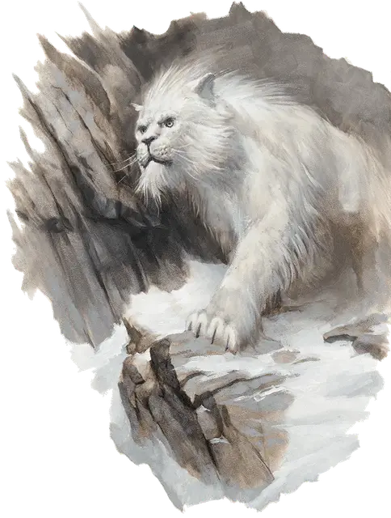

Скальная кошка
Crag Cat
Большой Монстр, нейтральный

Класс Доспеха 13
Хиты 34 (4к10 + 12)
Скорость 40 футов, лазая 30 футов
| мод | спас | ||
|---|---|---|---|
| СИЛ | 16 | +3 | +3 |
| ЛОВ | 17 | +3 | +3 |
| ТЕЛ | 16 | +3 | +3 |
| мод | спас | ||
|---|---|---|---|
| ИНТ | 4 | −3 | −3 |
| МДР | 14 | +2 | +2 |
| ХАР | 8 | −1 | −1 |
Навыки Восприятие +4, Скрытность +7
Чувства тёмное зрение 60 футов, пассивное Восприятие 14
Опасность 1 (200 опыта)
Бонус мастерства +2
Особенности
Необнаружимость. Кошка не может быть целью какой-либо магии прорицания или обнаружен с помощью магических датчиков.
Наскок. Если кошка движется по крайней мере 20 футов прямо к существу, а потом бьет его атакой когтями в этом же ходу, то цель должна преуспеть в спасброске Силы Сл 13 или быть сбитой с ног. Если цель сбита с ног, кошка может бонусным действием один раз атаковать укусом.
Отражение заклинаний. Кошка имеет преимущество на спасброски против любого заклинания, которое воздействует только на него (не на область). Если спасбросок кошки против заклинания 7-го уровня или ниже успешен, то заклинание не имеет никакого эффекта на кота и перенацеливается на самого заклинателя.
Действия
Укус. Рукопашная атака оружием: +5 к попаданию, досягаемость 5 футов, одна цель. Попадание: 8 (1к10 + 3) колющий урон.
Когти. Рукопашная атака оружием: +5 к попаданию, досягаемость 5 футов, одна цель. Попадание: 7 (1к8 + 3) рубящий урон.
Описание
Существо, упомянутое в преданиях северян, как Охотник на людей, безжалостный хищник, которого не найти нигде, кроме густого леса, предпочитающий выступы и утесы в горах. Его голос напоминает человеческий крик ужаса. Такой же звук он часто вызывает у своих жертв, ибо он предпочитает человечину из всех своих жертв.
Скальные кошки сливаются с природным окружением. Зимой их мех становится белым, незаметным на снегу. В другие времена года он имеет серый окрас, что позволяет кошкам с легкостью прятаться среди скал.
Скальный кот знает свою территорию и часто нападает, когда жертва спит, устала или как-то ослаблена. Хотя скальные коты, как правило одиночки, их можно увидеть в семейных группах из двух родителей и 1к4 маленьких невинных детенышей весной, или в голодных стаях в тяжелую зимнюю пору.